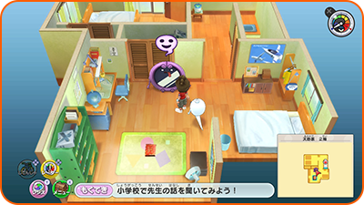
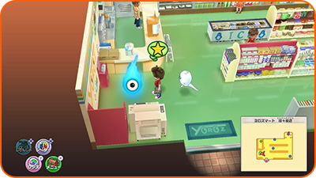
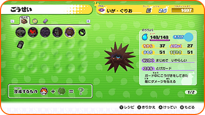
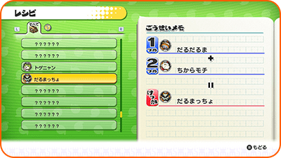
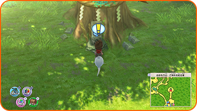
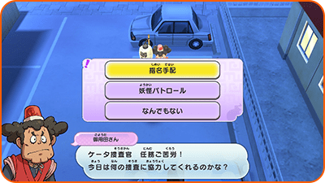
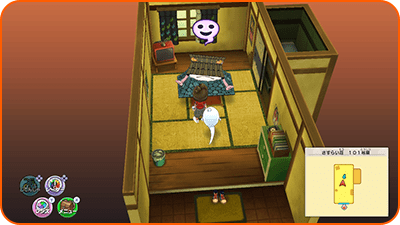

Servicios especiales
Telespejo
Una vez desbloqueado, podrás utilizar cualquier Telespejo para teletransportarte hasta otro Telespejo. Para hacerlo, habla con uno de ellos y selecciona tu destino.

Ignóculo
Habla con un Ignóculo en un Superhíper (u otro lugar) para restaurar los PV y los animámetros de tus Yo-kai. También te ofrecerá las siguientes opciones:

| Diario | Guarda tu progreso actual. |
|---|---|
| Cambiar Yo-kai | Puedes cambiar los Yo-kai que tengas en tu rueda Yo-kai por otros que hayas conseguido. |
| Hecho | Dejar a Ignóculo. |
Templo Shoten
Después de haber completado una misión para el Sr. Zen en el Templo Shoten, podrás fusionar Yo-kai u objetos.
※ Los objetos que se usen en la fusión desaparecerán.
Fusión
Crea nuevos Yo-kai u objetos fusionando diferentes Yo-kai u objetos.

Ver fórmula
Pulsa Ⓨ para poder consultar qué combinaciones (fórmulas) has fusionado hasta la fecha.

Expendekai
Aquí puedes utilizar monedas de Expendekai para conseguir Yo-kai u objetos. La cantidad de tiradas disponibles se determina una vez al día, al examinar el Expendekai. Además, puedes hacer una tirada gratis una vez al día.
※ Puedes hacer entre 3 y 6 tiradas al día en la Expendekai.

Monedas de expendekai
Las monedas de Expendekai son de diferentes colores, como rojo, amarillo y azul. Cada una te dará distintos tipos de objetos o de Yo-kai.
Yo-delincuentes y patrulla Yo-kai
Si hablas con el Inspector Peluso, que se encuentra cerca de la Oficina de correos Borreguero, podrás consultar el plazo para capturar a los Yo-delinceuntes buscados actualmente y aceptar misiones de patrulla Yo-kai.

| Yo-deliencuentes buscados | Te indica hasta cuándo puedes capturar a los Yo-delincuentes. |
|---|---|
| Patrulla Yo-kai | Recibirás una misión para derrotar a un cierto Yo-kai. Si derrotas al Yo-kai indicado, recibirás una recompensa. Las misiones de patrulla Yo-kai solo pueden aceptarse una vez al día. |
Mansión del Viajero
Si hablas con el gerente de la Mansión del Viajero, podrás invitar Yo-kai errantes. Habla con estos Yo-kai para recibir objetos o combatir contra ellos.
※ Puedes invitar de entre 1 a 3 Yo-kai errantes al día.
